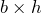

What is the size of a triangle?
Say you want to know how big this triangle is:

Or whether it is bigger or smaller than this other one:

What does size mean when you are talking about a triangle? It can be how much paint you need to color it, or how many kilos of seed you need to plant on it to cover it with grass, or how many rectangular cookies you can fit on it. All these measures are quite arbitrary, but they can all make sense on certain occasions.
The arbitrary measure we tend to stick with is: how many squares can you fit on it? You pick a square of a given side, say 1 m or 1 km, try to figure out how many of them will fit in the triangle, and call it the area of the triangle. Filling up a triangle with squares is not easy, as squares have the annoying property not to fit perfectly inside a triangle.
Squares do not fit triangles well, but they do a pretty good job filling up rectangles, so we might think about adding a rectangle to our triangle, like this:
This is the minimum rectangle that encloses our triangle. Now we have a triangle and a rectangle that are clearly related: if we make the triangle bigger, the rectangle enclosing it will be also bigger.
Shouldn't there be a relationship between the size of the rectangle and the size of the triangle? Because we know how to measure a rectangle: we multiply its sides, in this case . If we could figure out the relationship between their sizes, we would know the size of the triangle.
Take a look at this other image:

Do you see it already? If not, try this other one:

We have divided the rectangle in two smaller rectangles, the green and the blue, and at the same time we have divided our triangle in two smaller triangles, also green and blue. Each small triangle is exactly half its small rectangle.
In other words: the size of our triangle is exactly half the
size of the rectangle. So, if you want to measure a triangle,
you just multiply its base  times its height
times its height  , and then
divide by two.
, and then
divide by two.
But wait: this argument surely does not work for the other triangle we had up there, the one we wanted to compare with our original triangle:
True, the argument doesn't hold, but the way to measure it
turns out to be the same: we multiply , and divide
by two. But you have to choose your and wisely, like
this:

So, if this is true, you can move the upper vertex of a
triangle horizontally as much as you want, and as long as
and remain constant its area will not change.
But is it true? It is a great exercise, so maybe you can think about it. Hint.